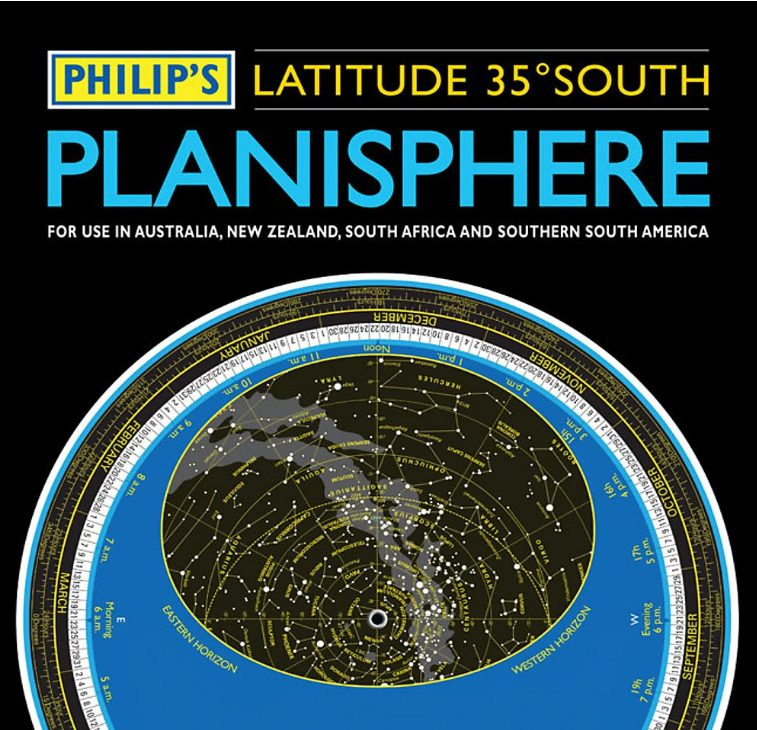
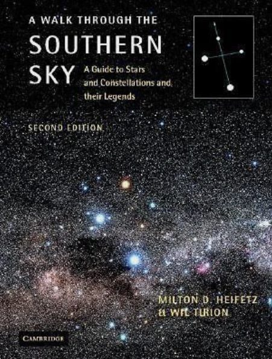
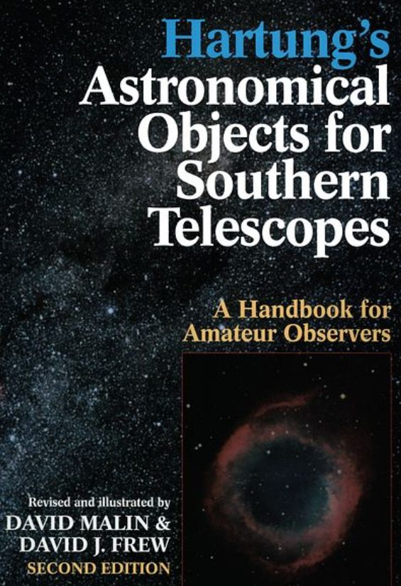
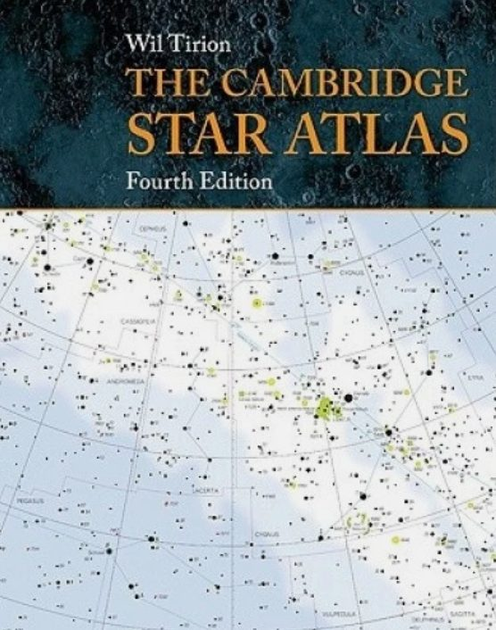
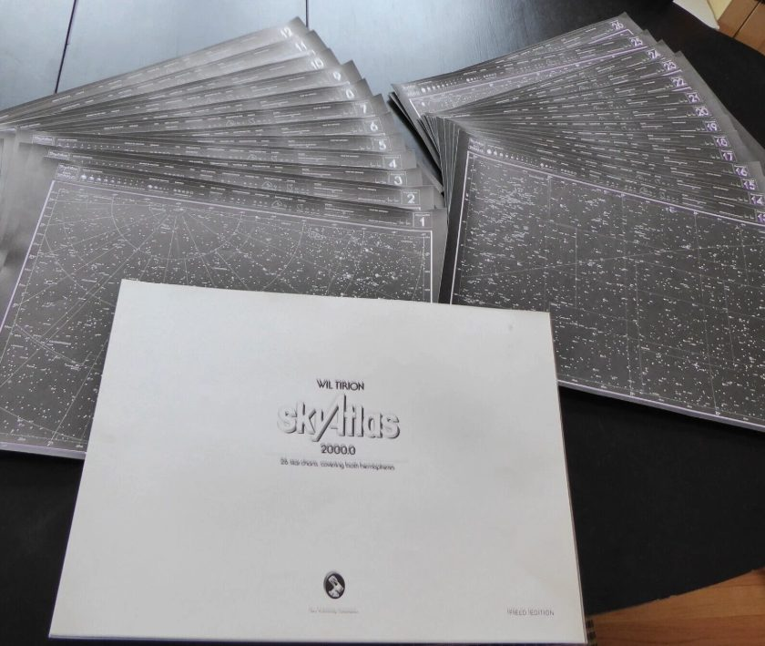
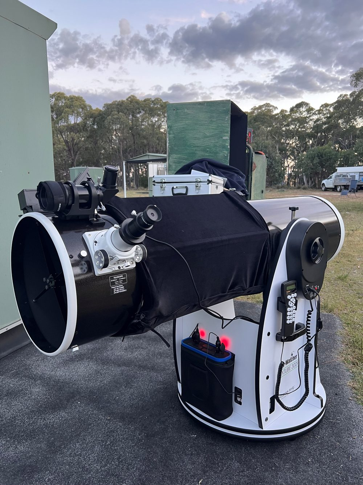

Deep Sky Notes — December 2025
Wiruna Wanderings
It’s been a quiet few months on the observing front. I missed the October and November Wiruna weekends on account of moving house. The December Wiruna weekend was cloudy both nights. So, in place of observing notes, I’ve put together a short summary of some resources I rely on—especially aimed at members who are newer to visual observing.


The first step to figuring out what to look at is figuring out what’s visible. To do that, you need a planisphere. I have a physical Philip’s Planisphere (For Latitude 35 South) that I have carted around with me for years. Digital planispheres available via phone apps (e.g., Stellarium, SkySafari) are excellent, but in the field I still like something that doesn’t care about dew, batteries, or cold fingers. If you are new to visual astronomy, the next step is being able to identify constellations. There are many books one could recommend. A favourite that I find myself referring to frequently is, A Walk Through The Southern Sky: A guide to stars and constellations and their legends, by Heifetz and Tirion (I have the 1st edition). The directions are straightforward and encourage the kind of slow, deliberate sky familiarity that pays off later. If you are new to visual astronomy, the best way to start is to pick an easily identifiable starting point (Crux or Orion) and follow Heifetz and Tiron’s directions around the sky. Even sitting in our old apartment in Sydney’s light polluted skies with a pair of binoculars, I could trace out a number of constellations with a bit of patience. Digital planisphere apps with an augmented reality mode are also very handy for this.


Before heading out for a night of observing at Wiruna, I try to have a rough list of deep-sky targets to observe. As a starting point I often look through my copy of The Cambridge Star Atlas by Wil Tiron (2nd Edition). These charts cover stars down to 6.5th magnitude, plus 900 deep-sky objects. This gives me an idea of the brighter deep sky objects in any given constellation, and a starting point for my observing list. I also find Hartung’s Astronomical Objects for Southern Telescopes by Malin and Frew (2nd Edition) a very useful inspiration with its detailed deep-sky object descriptions and images. For more systematic searching, I recently purchased SkyTools 4 (Visual Edition). This desktop software allows you to search, filter, and generate custom object lists at the click of a button, pulling from many catalogues beyond the usual Messier/NGC/IC lists. It’s particularly useful for filtering by object type, brightness, size, and optimal visibility window, and it even allows you to input your equipment and suggests appropriate eyepieces. It can also generate charts that mimic what you’ll see using a Telrad, finderscope, and eyepiece (although I still haven’t worked out how to adjust the stellar magnitude limits on those charts—tips welcomed).
Other useful websites include Adventures In Deep Space, which compiles and publish observing reports from contributing amateur astronomers, providing a rich list of inspiration. And last but not least, the Universe newsletter’s own back catalogue is a treasure trove of observing inspiration. I have a pile of Universe newsletters from the early 2000s that I keep and flick through when I am searching for ideas.

With a list in hand, it’s time to find the objects in the sky. If I am not using the Go-To function (or more likely if it’s not working), a good star atlas comes in handy. At the risk of sounding (even more) like a Luddite, I don’t have a laptop/phone app with digital maps that I use in the field. For objects in brighter constellations, with many nearby reference points to star-hop from, I start with The Cambridge Star Atlas by Wil Tiron (2nd Edition). For a more detailed set of charts, I turn to the Sky Atlas 2000 by Wil Tiron. I have the field edition (black background with white stars) that I purchased at a SPSP many years ago. I had these individually laminated at Officeworks, and I can happily use these all night even on the most dew heavy nights. These charts cover stars down to 8.5th magnitude. That said, this is also where charts generated by SkyTools (or even Stellarium) can be very useful—especially for fainter targets or more complex hops that benefit from a custom field-of-view match. Note, I once asked ChatGPT to draw a set of star-hop charts for an object—let’s just say I won’t be replacing my physical charts anytime soon.

Equipment-wise I have a Meade 10inch LX200 Schmidt-Cassegrain which defies any attempt to work consistently. So much to the surprise of my wife, I brand-new telescope arrived on our doorstep over Christmas: a SkyWatcher 12-inch Go-To Dobsonian. The 12inch I can lift and move on my own comfortably, the 14-inch almost doubles in weight. The dual-encoder was also very appealing, combining the best of two worlds: the ability to manually push the scope around and use a Go-To function when you become hopelessly lost. The telescope came in two parts, the optical tube assembly (which uses a collapsible truss tube design) and the base plate, and is simple to bolt together. The first thing to go was the straight through finderscope that comes standard with these scopes. I had a Celestron RACI 9x50 finderscope that I purchased and was sitting on my LX200. Luckily the screw holes for the dovetail mount of the RACI lined up nicely with the holes of the Skywatcher finder so it was an easy swap. Next step was to add a Telrad using double-sided stick pads, giving me the option to detach and adjust its position. The standard focuser on this model, is a single speed Crayford focuser. Annoyingly the 2-inch adapter, uses two thumbscrews for holding the eyepiece in place, while the 1.25-inch adapter uses a more reliable compression ring. Putting a heavy eyepiece with only two thumb screws to hold it against soft aluminium makes me nervous, as I have heard stories of heavy eyepiece slipping out of place.
Naturally, I brought the new scope to Wiruna in December—so the cloud was probably my fault for failing to make the proper sacrifice to the weather gods (at least we had an excellent communal dinner on Saturday night to enjoy). Instead, first light for the scope was on my back deck at our new home on the Central Coast a week later. With my 2 star-alignment completed, I keyed in my first object, the Orion Nebula (M42) and excitedly waited for the grand nebula to appear in the centre of my 35mm eyepiece. The telescope had other ideas: it slewed to a blank patch of sky 5-10 degrees off M42. Curiously, as I slewed the telescope in the azimuth direction M42 came into view, so the pointing was off in only one dimension (any readers with a SkyWatcher Dob who have had similar problems, I would be very grateful for any pointers). At least my first attempt at collimating a Dobsonian seemed to go ok, but the pointing would require some more work.
Alas, the weather gods have not permitted me another clear night to tinker much further with the telescope. But I hope 2026 will bring some clear nights soon enough.
Until next month. Clear skies.